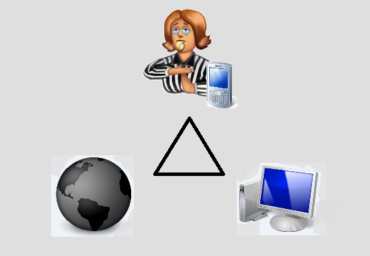

Syncstats est la nouvelle façon d'afficher vos résultats de hockey. Syncstats synchronise sans le moindre effort les résultats de vos matchs. À l'aide d'une application Androïd que l'aribtre (ou autre teneur de livre) aura sous la main durant la partie, les statistiques sont enregistrées en temps réel. De là, plus aucun effort n'est nécessaire avant la consultation en ligne.

Nous sommes encore en développement. Néanmoins, nous nous efforçons de faire progresser aussi vite que possible ce beau projet. N'hésitez pas à nous suivre en ligne!